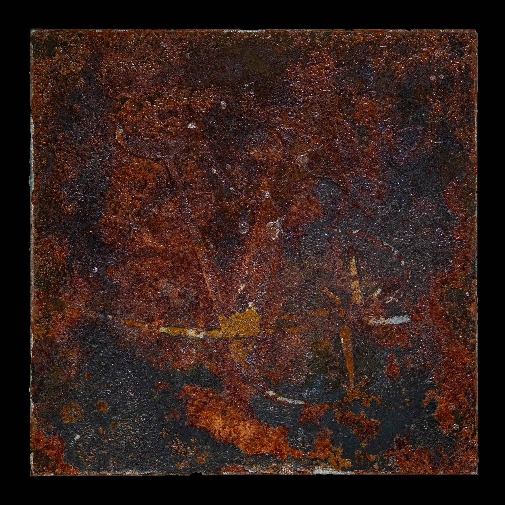
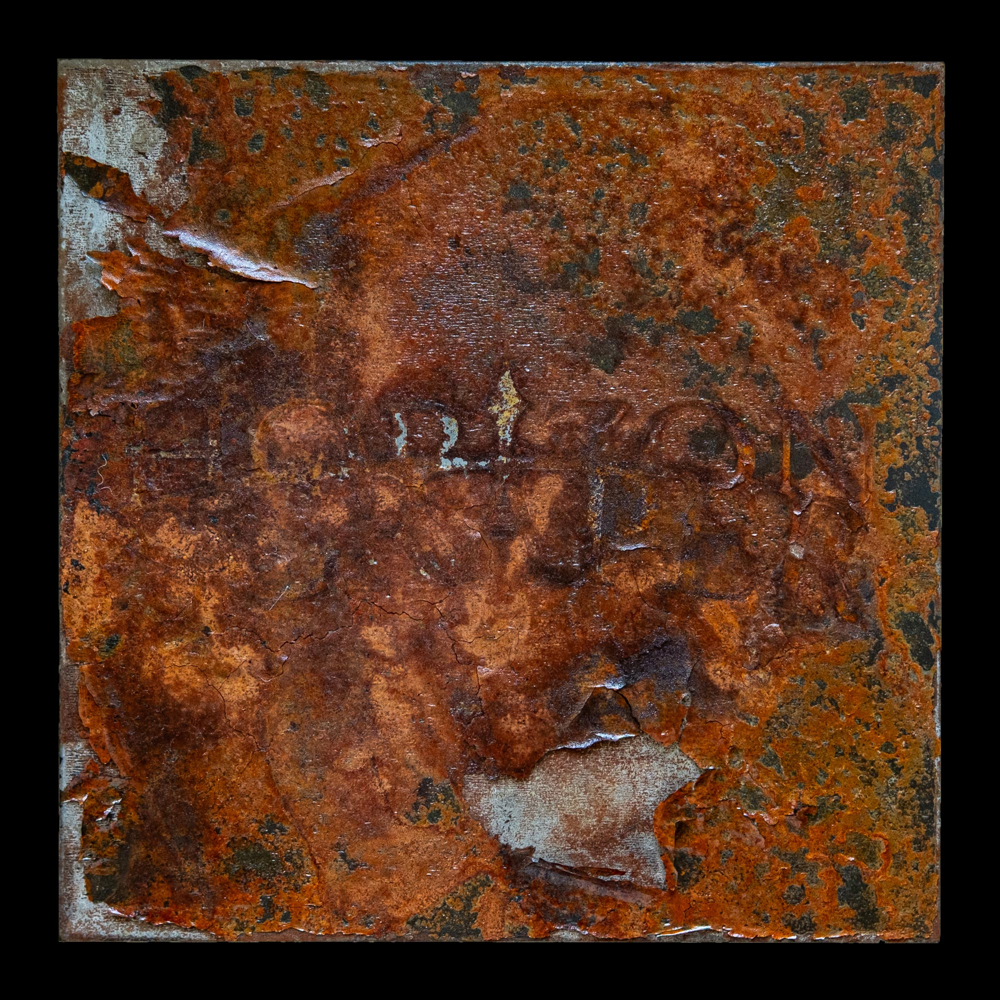

Remants of the Horizon Scraper
2025
Metal Plates 20x20 cm
Alternative cover concepts for Quadeca’s album “Vanisher, horizon scraper”. Taking inspiration from the album’s nautical narrative and wanting to work with tangible materials, the project focused on exploring and experimenting with rust. The images are produced through engraving on hot-rolled steel, after which a corrosive mixture is applied to accelerate the oxidation process. The images aim to resemble that of remnants of old sea vessels, which, through salt water and time, have corroded beyond recognition.

